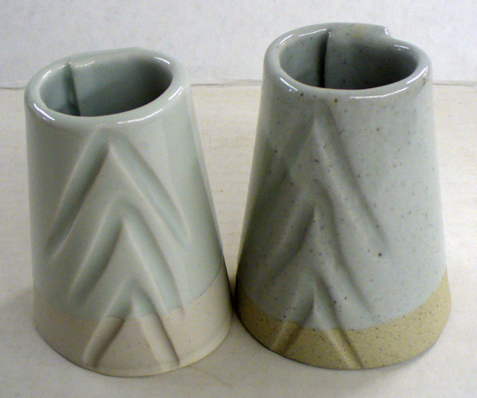
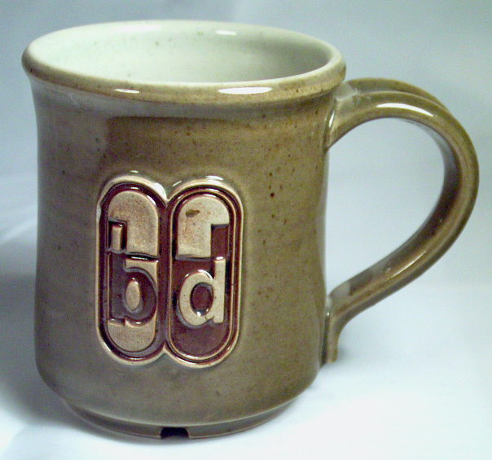
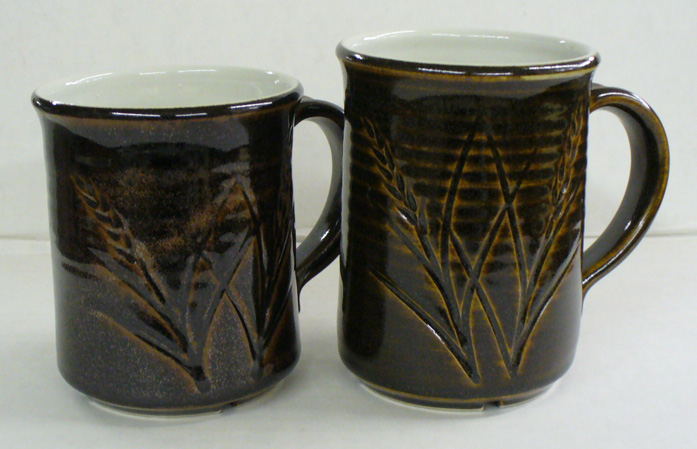
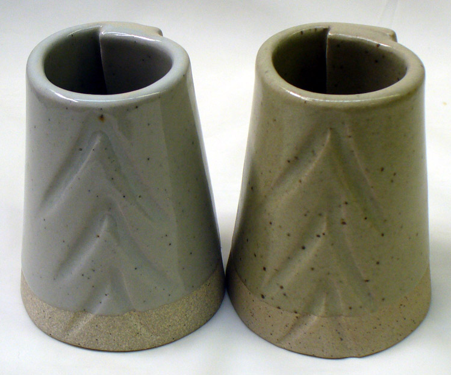
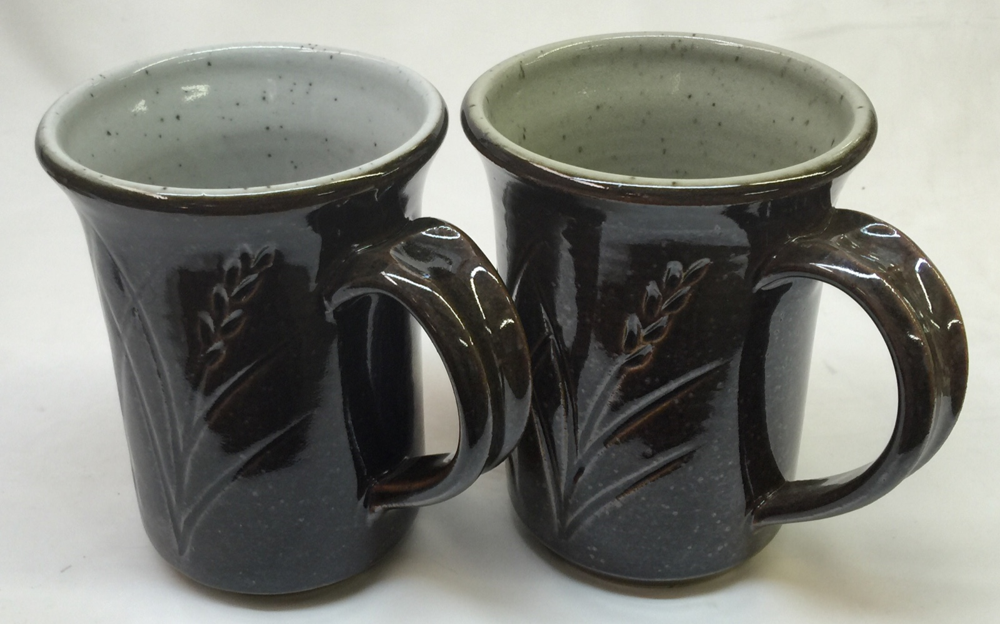
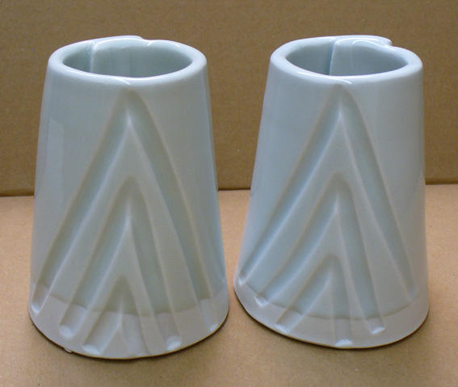
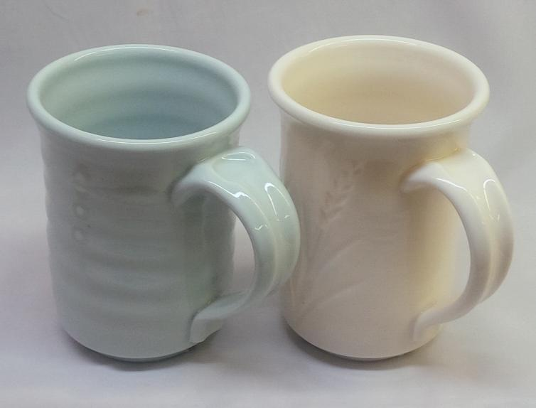
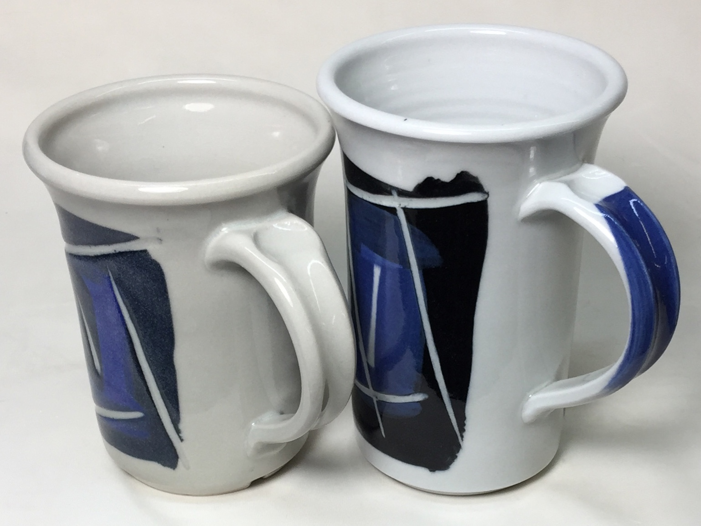
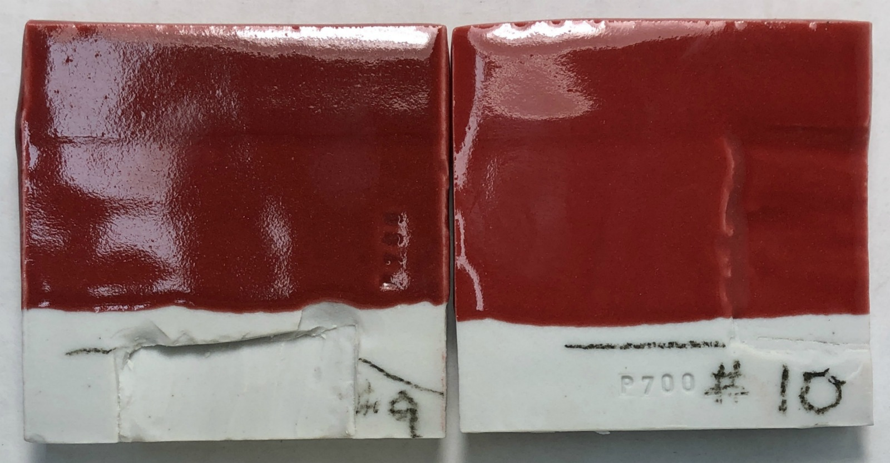
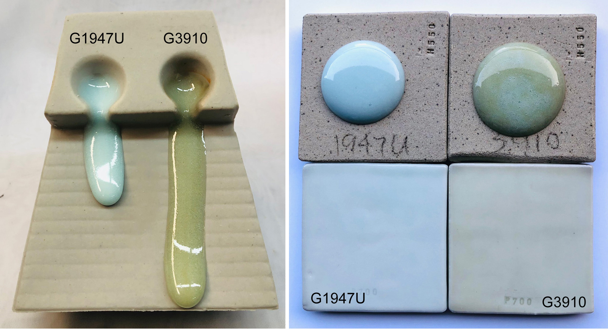

CELECG - Celestite Crystalline Glaze
FAAO - Fa's All-Opaque Crystalline Glaze
FAC5 - Crystal Number Five Glaze
FO - Octal Crystalline Glaze
G1214M - 20x5 Cone 6 Base Glossy Glaze
G1214W - Cone 6 Transparent Base
G1214Z1 - Cone 6 Silky CaO matte base glaze
G1215U - Low Expansion Glossy Clear Cone 6
G1216L - Transparent for Cone 6 Porcelains
G1216M - Cone 6 Ultraclear Glaze for Porcelains
G1916Q - Low Fire Highly-Expansion-Adjustable Transparent
- Cone 10 Glossy transparent glaze
G2000 - LA Matte Cone 6 Matte White
G2240 - Cone 10R Classic Spodumene Matte
G2571A - Cone 10 Silky Dolomite Matte glaze
G2826R - Floating Blue Cone 5-6 Original Glaze Recipe
G2826X - Randy's Red Cone 5
g2851H - Ravenscrag Cone 6 High Calcium Matte Blue
G2853B - Cone 04 Clear Ravenscrag School Glaze
G2896 - Ravenscrag Plum Red Cone 6
G2902B - Cone 6 Crystal Glaze
G2902D - Cone 6 Crystalline Development Project
G2916F - Cone 6 Stoneware/Whiteware transparent glaze
G2926B - Cone 6 Whiteware/Porcelain transparent glaze
G2926J - Low Expansion G2926B
G2928C - Ravenscrag Silky Matte for Cone 6
G2931H - Ulexite High Expansion Zero3 Clear Glaze
G2931K - Low Fire Fritted Zero3 Transparent Glaze
G2931L - Low Expansion Low-Fire Clear
G2934 - Matte Glaze Base for Cone 6
G2934Y - Cone 6 Magnesia Matte Low LOI Version
G3806C - Cone 6 Clear Fluid-Melt transparent glaze
G3838A - Low Expansion Transparent for P300 Porcelain
G3879 - Cone 04 Transparent Low-Expansion transparent glaze
GA10-A - Alberta Slip Base Cone 10R
GA10-B - Alberta Slip Tenmoku Cone 10R
GA10-D - Alberta Slip Black Cone 10R
GA10x-A - Alberta Slip Base for cone 10 oxidation
GA6-A - Alberta Slip Cone 6 transparent honey glaze
GA6-B - Alberta Slip Cone 6 transparent honey glaze
GA6-C - Alberta Slip Floating Blue Cone 6
GA6-D - Alberta Slip Glossy Brown Cone 6
GA6-F - Alberta Slip Cone 6 Oatmeal
GA6-G - Alberta Slip Lithium Brown Cone 6
GA6-G1 - Alberta Slip Lithium Brown Cone 6 Low Expansion
GA6-H - Alberta Slip Cone 6 Black
GBCG - Generic Base Crystalline Glaze
GC106 - GC106 Base Crystalline Glaze
GR10-A - Pure Ravenscrag Slip
GR10-B - Ravenscrag Cone 10R Gloss Base
GR10-C - Ravenscrag Cone 10R Silky Talc Matte
GR10-E - Alberta Slip:Ravenscrag Cone 10R Celadon
GR10-G - Ravenscrag Cone 10 Oxidation Variegated White
GR10-J - Ravenscrag Cone 10R Dolomite Matte
GR10-J1 - Ravenscrag Cone 10R Bamboo Matte
GR10-K1 - Ravenscrag Cone 10R Tenmoku
GR10-L - Ravenscrag Iron Crystal
GR6-A - Ravenscrag Cone 6 Clear Glossy Base
GR6-B - Ravenscrag Cone 6 Variegated Light Glossy Blue
GR6-C - Ravenscrag Cone 6 White Glossy
GR6-D - Ravenscrag Cone 6 Glossy Black
GR6-E - Ravenscrag Cone 6 Raspberry Glossy
GR6-H - Ravenscrag Cone 6 Oatmeal Matte
GR6-L - Ravenscrag Cone 6 Transparent Burgundy
GR6-M - Ravenscrag Cone 6 Floating Blue
GR6-N - Ravenscrag Alberta Brilliant Cone 6 Celadon
GRNTCG - GRANITE Crystalline Glaze
L2000 - 25 Porcelain
L3341B - Alberta Slip Iron Crystal Cone 10R
L3685U - Cone 03 White Engobe Recipe
L3724F - Cone 03 Terra Cotta Stoneware
L3924C - Zero3 Porcelain Experimental
L3954B - Cone 6 Engobe (for M340)
L3954N - Cone 10R Base White Engobe Recipe for stonewares
MGBase1 - High Calcium Semimatte 1 (Mastering Glazes)
MGBase2 - High Calcium Semimatte 2 (Mastering Glazes)
MGBase3 - General Purpose Glossy Base 1 (Mastering Glazes)
MGBase4 - Glossy Base 2 Cone 6 (Mastering Glazes)
MGBase5 - Glossy Clear Liner Cone 6 (Mastering Glazes)
MGBase6 - Zinc Semimatte Glossy Base Cone 6
MGBase7 - Raspberry Cone 6 (Mastering Glazes)
MGBase8 - Waxwing Brown Cone 6 (Mastering Glazes)
MGBase9 - Waterfall Brown Cone 6 (Mastering Glazes)
TNF2CG - Tin Foil II Crystalline Glaze
VESUCG - Vesuvius Crystalline Glaze
Insight-Live Shares
77C04E - 50:30:20 Frit 3134 cone 6 base
77E05B - Cone 10R Celadon - Luke Lindoe
77E06B - Lindoe Dark Celadon - Lower COE
77E14A - Cone 10R Red Mustard - Luke Lindoe
77E15A - Cone 10R Yellow Mustard - Luke Lindoe
84-G-05-S - Cone 10R Matte Crystal Iron - Luke Lindoe
G 304 - Cone 10R Crystal Iron Brown - Luke Lindoe
G1002 - LEACH'S CELADON CONE 10R
G1129 - MEDALTA CLEAR GLAZE CONE 8-10
G1214M - Hansen 20x5 Clear Cone 6 Base Glaze
G1214Z - Cone 6 Calcium Matte Base Glaze
G1214Z1 - Cone 6 Calcium Matte v2
G1214Z2 - Cone 6 Calcium Matte + TiO2
G1847 - Cone 10R Robin's Egg Blue
G1916M - COE Adjustable Low Fire Clear Glaze
G1916Q - Cone 05+ Expansion Adjustable Gloss Base
G1916Q2 - G1916Q glaze + 5% silica
G1916Q3 - G1916Q glaze + 10% silica
G1916QL - Cone 05+ Low Expansion Transparent glaze
G1916QL1 - Cone 05+ Lower Expansion glaze
G1916S - Cone 06-04 MgO Matte
G1916S1 - Cone 06-04 MgO (using talc)
G1916V - Cone 2 Clear (based on G1916Q)
G1916W - G1916Q with Iron Fining Agent
G1947U - Cone 10/10R Transparent Base
G2415E - Classic Albany Lithium Brown Glossy
G2415J - G2415E Alberta Slip Brown (less Li)
G2571A - Original Cone 10R Silky Matte Base Recipe
G2571B - Cone 10R Silky Matte Base (improved)
G2571BB - G2571B Rutile Bamboo
G2571C - Cone 10R Silky Matte Blue
G2571D - Cone 10R Silky Matte Red
G2571D1 - Cone 10 Marbled Red Glaze
G2571E - Cone 10R Silky Matte Black
G2576B - Cone 10R Tenmoku Glossy
G2584 - Cone 10R Blue Celadon
G2826A - 50:30:20 Gerstley Borate Cone 6 base
G2826A1 - 50:30:20 Frit 3134 base (fixed)
G2826A2 - 50:30:20 Gillespie Borate Cone 6 base
G2826A3 - 50:30:20 GB Makeover Pottery Glaze
G2826B - GB:Frit Raku Glaze
G2826F - GB Honey Amber 04
G2826G - GB Lavendar Satin Glaze Cone 6
G2826M - Gerstley Borate Antique Green Cone 5
G2826N - Gerstley Borate Raku Base NS/GB
G2826R - Floating Blue Original Cone 6 Glaze
G2826R1 - Floating Blue Using Gillespie Borate
G2826U - Floating Blue using Frit 3134
G2826V - Gerstley Borate Cream Oatmeal Cone 6 recipe
G2850C - Ravenscrag Cone 6 Black Glossy
G2850M-C - Ravenscrag Cone 6 Light Blue Matte
G2850P - TEAL BLUE CONE 6 KAT
G2851A - RAVENSCRAG SLIP Matte Blue - Cone 6
G2851AB - RAVENS FLOATING BLUE Cone 6
G2851D - KAT'S RC MATTE - Cone 6
G2851H - RAVENSCRAG Brown Gold Matte Cone 6
G2880 - Alberta Slip Tenmoku #1
G2880A - Alberta Slip Tenmoku #2
G2881B - Ravenscrag Alberta Slip Celadon
G2890B - Randy's Red Original Cone 6 Glaze
G2894 - Ravenscrag Tenmoku #1
G2894A - Ravenscrag Tenmoku #2
G2908A - Alberta Slip Floating Blue
G2917 - Ravenscrag Floating Blue
G2926 - Perkins Clear
G2926A - Perkins Clear with Frit 3134
G2926B - Cone 6 Clear Glossy Base
G2926BL - G2926B Cone 6 Gloss Black
G2926J - G2926B Reduced COE (Li2O)
G2926S - G2926B Reduced COE (MgO)
G2931 - Worthington Cone 06-2 Clear
G2931F - Zero3 Ulexite Transparent Glaze
G2931G - Zero3 G Low Expansion Low Fire Clear
G2931H - Zero3 H High Expansion Variant
G2931K - Zero3 K Cone 03 Transparent Glaze
G2931L - Zero3 L Low Expansion Variant
G2931L2 - Zero3 L Low Expansion w/F-69
G2932 - Deb's Clear #1 Cone 04-02
G2932A - Deb's Clear #2
G2933 - Gerstley:PV Clay low fire clear
G2934 - Cone 6 Magnesia Matte Base
G2934A - High Dolomite-Testing glaze
G2934BL - G2934 85:15 Adjustable Matte Black
G2934J - G2934 with ZnO for Brown Stains
G2934J1 - G2934 (glossed using ZnO)
G2934Y - G2934 (lower-LOI)
G2934Y1 - G2934Y (Anti-Crawling)
G2934Y2 - G2934Y (Higher COE/Stony)
G2934Y3 - G2934 Super Durable
G2934Y4 - G2934 Super Durable #2
G2934Z - G2934Y Red Using F-69
G2936 - Ravenscrag Low Expansion Cone 6 Base
G2936B - Ravenscrag Low Expansion White Base 2
G2936C - Ravenscrag Original Cone 6 Base Glaze
G2938 - Wright's Water Blue Base
G2941A - Leach's Satin Clear Original
G2941C - Leach's Satin Clear - Craze fix
G3806 - Panama Blue Cone 6
G3806A - Panama Blue 2 - More clay, Copper Oxide
G3806B - Panama Blue 3 - Copper Carbonate
G3806C - Panama Cone 6 Adjustment 2015
G3806D - Panama c6 - Lower COE #1
G3806E - Panama c6 - Lower COE #2
G3806F - Panama c6 - Lower COE #3
G3806K - Panama c6 - Lower COE #7
G3806N - C6 Fluid Clear Final Recipe #10
G3808 - Cone 6 Bright Clear - Shaun Mollonga
G3808A - Cone 6 Bright Clear using Frits
G3813 - Campana Cone 6 Transparent Glaze
G3813B - Campana Clear Lower Expansion #2
G3813C - Campana Clear Low Expansion (no Spodumene)
G3814 - Low Zinc High Feldspar Fritless base
G3822 - Spectrum Clear 700 Dipping Glaze
G3834 - Tenmoku Cone 6
G3840 - Shino Trial Number 1
G3868 - Gold - Cone 6
G3868A - Gold Using Spodumene
G3868B - Gold Using Fusion Frit 493
G3868C - Gold Using Frit #2
G3875 - Tangerine 4 (Orange)
G3875B - Zinc Clear cone 6
G3875C - Tangerine + Orange Stain
G3879 - Cone 04+ UltraClear Glossy Base
G3879C - Cone 04 UltraClear Low-Expansion
G3879E - Cone 04+ UltraClear Glossy Base
G3879F1 - Cone 04+ UltraClear Glossy Base
G3888 - Kieth Davitt High-fluid-melt copper blue
G3892 - Val Cushing Satin White #71
G3903 - Alberta Slip + Frit FZ-16
G3904 - Original Recipe Using Frit 3124
G3904A - 3134 Mistake Recipe Fixed
G3909 - Ravenscrag Cone 10R Matte Blue
G3910 - Fritted version of G1947U #1
G3910A - Fritted version of G1947U #2
G3912A - Surface Tension White Tin
G3914A - Alberta Slip Gloss Black
G3918 - Red Mustard in G2571A Base #1
G3925 - Perfect Clear
G3925B - Perfect Clear Make-Over #1
G3926B - G2926B with Tin/Zircopax
G3926C - G2934 White Tin/Zircopax
G3933 - G2934:G2926B Oatmeal - Cone 6
G3933A - G2934:G2926B Oatmeal Cone 6
G3933E - G3933 Oatmeal Ravenscrag #2
G3933EF - G3933 Oatmeal Ravenscrag #4
G3933G1 - G3933 Oatmeal Alberta Slip + Li
G3939A - Cone 6 Oxidation Marbled Red
G3948 - Red Orange Glazy Original
G3948A - Plainsman Iron Red Orange
G3948A1 - Red Orange - Plainsman Spodumene
G3948A3 - Red Orange - Plainsman Spodumene #2
G3955 - N505 Base Satin White - Opaque
G3966 - Cone 10R S2 - Luke Lindoe
G3971 - Lead Bisilicate Glaze
G3973 - Hilda Ross Rust
G4546 - Pattis Crystal Clear Cone 6
G4594 - 3B as a glaze
GA6-A - Oringal Alberta Slip Amber/Honey base
GA6-F - Alberta Slip Cone 6 Oatmeal
GR10-A - Ravenscrag Cone 10R Transparent Base
GR10-C - Ravenscrag Talc Matte
GR10-CW - Ravenscrag Cone 10R Talc Matte White
GR6-H - Ravenscrag Cone 6 Oatmeal
H0009 - 1945 MEDALTA FILTER CAKE
L2553B - Imco Carbondale Clay - C-Red
L2596E - H550 Casting Body #5
L2596F - H550 Casting Body #6
L2596G - H550 Casting Body #8
L2626 - Barnard Slip
L3127E - Boraq 1
L3127G - Boraq 2
L3127I - Boraq 3
L3127N - Boraq 5 #4 (available materials)
L3146A - Foundry Hill Creme+Nepheline
L3146B - New Foundry Hill Creme
L3146C - FHC + Kyanite
L3146D - FHC + Pyrax
L3164A - Cordierite Flameware - more bentonite, added grog
L3500 - Alberta Slip Original cone 6 base glaze
L3500G - Alberta Slip + Frit 3249
L3500H - Alberta Slip + Frit 3249 and Silica
L3523 - Cone 04 Gerstley Borate matte base
L3523A - Compare Boraq 5 #1 with GB in a glaze
L3523B - L3523 glaze using Boraq 5 L3127L
L3523C - L3523 glaze using Boraq 5 L3127M
L3523D - L3523 recipe using Boraq 5 L3127N
L3617 - Cornwall Stone substitute #2
L3619 - Cornwall Stone Average Analysis
L3660C - Flameware - Very High Pyrax with Molochite
L3660G - Pyrax/Kaolin Flameware
L3660P - Pyrax Flameware (low fire)
L3664A - PV CLAY Feb 2013 Shipment
L3673 - Laguna Barnard Slip Sub
L3685U1 - Zero3 Engobe Recipe
L3685Y - Cone 03 Terrastone 2 Engobe
L3685Z2 - Z2 White Cone 04 Engobe Base (no frit)
L3685Z3 - Z3 White Cone 04 Engobe (5% frit)
L3685Z5 - White Cone 04 Engobe for L4170B (3% frit)
L3685Z6 - Brown Engobe for Snow
L3685Z7 - Cone 04 Brown Engobe for Snow
L3685Z8 - White Cone 2 Engobe for L215, L210, L4170B (2% frit)
L3693E - Alumina Lining for Crucibles
L3693E1 - Zircon Lining for Crucibles
L3693H1 - Plastic Refractory Alumina Body H1
L3724M1 - Redart Fritware #4
L3724M2 - Redart Fritware #5
L3724N - Redart Fritware #1
L3724N2 - Zero3 Stoneware
L3724P - Redart Fritware #2
L3728 - Cone 6 Dolomite Testing Glaze
L3778D - Cone 6 Translucent Grolleg Plastic
L3778D1 - Cone 6 Grolleg Pink/Blue Porcelains
L3778G - Cone 6 Translucent Grolleg Casting
L3798C - M340 Casting Body
L3798G - M340C Casting Body Revision 7
L3802E - Crystal Ice - Cone 10
L3806L - Panama c6 - Lower COE #8
L3840 - Diatomaceous Earth (Ant Killer)
L3868 - Craft Crank - From PotClays, UK
L3868A - Craft Crank - Base
L3868C - Craft Crank Clone 2
L3869 - Crank Industrial - From England
L3869A - Industrial Crank Base
L3894D - PV Calc Mix 4
L3906 - P300 Cone 6 Casting Body
L3911 - Bizen Clay
L3916 - Bizen Duplicate using Plainsman Materials
L3924C - Zero3 Porcelain - Experimental
L3924J - Zero4 Plastic Porcelain
L3924L - Zero4 Casting Porcelain
L3954B - Cone 6 White Engobe Recipe
L3954F - Cone 6 Black Engobe
L3954J - Black Cone 10 Whiteware Engobe Recipe
L3954N - Cone 10 Engobe for H550
L3954R - Super-White Engobe for Cone 6
L3954S2 - White Engobe for M340, M390, L215, L210
L3972 - 98 Mix
L3977 - BGP Low Stoneware Body
L4001 - Plainsman Super Kiln Wash
L4005D - M390 Casting Version 5
L4023F - Proposed H440 Casting Body #5
L4028 - G2571A Rutile Bamboo
L4053B - Cone 6 Black Clay Body - Type 1
L4068 - Barnard Chemical Substitute
L4115J3 - L211 Stnwre 3D:OM4:NS
L4115L2 - L211 3D:OM4:NS:Talc 42 mesh
L4115L2a - L211 3D:OM4:NS:Talc 80 mesh
L4158 - Cimtalc 15 Talc lab test
L4159 - Cimtuff 9115 Talc lab test
L4163 - Red Art Cone 1 Clay Body
L4168G5 - H440C (concentrate) #5
L4168G9 - New H440 Functional Proposal #8
L4170 - L215 Terra Cotta Casting #1
L4170B - Terra Cotta Casting #2
L4170F - Terra Cotta Casting #3
L4208C - MNS Cone 6 Fine Stoneware
L4208D - 3B +200# particles sieved out
L4217G - M370-like Cone 6 Faster Casting
L4227 - Plus Clay
L4228 - Fimo Clay
L4237 - Redart Tile Body
L4239 - H550 Casting Body #7
L4244 - BGP Clay:Flyash F 50:50 Mix
L4244A - Flyash F:Bentonite 10:90
L4245 - LaFarge Fly Ash F:Bentonite 95:5 Mix
L4245F - Fly Ash F:Bentonite:BallClay 80:10:10
L4246 - A2 +200# particles sieved out
L4247 - A3 +200# particles sieved out
L4248 - Old Hickory M23 Ball Clay
L4249 - 3D +200# particles sieved out
L4249A - 3D MNS 325 Mesh
L4249B - 3D 100 mesh
L4264 - Raku Crackle Glaze Base - Frit 3110
L4264A - Raku Glaze Base #1
L4264B - Raku Glaze Base #2
L4264C - Raku Glaze Base #3
L4264D - Raku Glaze Base #4
L4273 - G3806N1 + 2% Zircopax
L4280 - L215 : M390 Mix for Cone 1 Stoneware
L4287 - Midfield Clay Yukon
L4287A - Catchment Clay Yukon
L4292 - Monte Marte Air Hardening Clay
L4293 - DAS Air Drying Clay
L4294 - Sculpey PE08 Oven Bake Clay
L4398 - Ravenscrag Cone 6 Raspberry
L4404A - Refractory Casting Slip
L4404B - Plastic Refractory (heavy duty)
L4404C - Refractory Plastic (low expansion)
L4404D - Refractory Casting (low expansion)
L4410L - L213 NS:Dolo 30:20
L4410P - L213 40:10 Dolo/NS
L4421 - Seed pelleting clay and binder
L4441A - Minspar
L4441B - Minspar Calculated Substitute
L4453C - 3D:A2 Body Base H550 Blend
L4458 - Lithium Flameware Test
L4482B - Alumina Wadding #2
L4484D - 2018 3B+6% 6666 at 100#
L4498 - Low Expansion Super White Cone 6 Fritware
L4498A - Low Expansion Fritware Casting
L4530 - Carbondale M390 #1
L4530A - Carbondale M390 #2
L4532A - Pyrometric cone pressing body #2
L4532B - Cone pressing body #3
L4532D - Cone pressing body #5
L4532F - Cone 5 Cone-casting v.1
L4543 - Firebrick & kiln post/shelf clay - v1.0
L4543B - Firebrick & kiln post clay v2.0
L4543C - Refractory kiln post clay v4.0
L4557 - Volumetric Screw Feeder Design - ESP32 based
L4558 - M390 Casting (M370+C-Red)
L4558A - M390 Cone 6 C-Red Casting #1
L4558B - M390 Cone 6 C-Red Casting #2
L4567 - Cat Litter
L4575 - SIAL Refractory Slip
L4575A - SIAL refractory slip Duplicate
L4588 - Red NZK Cone 6 Porcelain
L4597 - Luke Lindoe Fired Samples
L4599 - Slip for Slipware
L4599A - Slip for Slipware - #5 Ball Clay
L4608 - Kyanite Bisque-Fix, Kiln-Patch
L4655 - Titanium Dioxide in GA6-C
L4655A - GA6-C Titanium + Iron
L4655B - GA6-C Lower Thermal Expansion
L4696 - Cordierite Flameware
L4697 - Flameware body from French mfgr
L4705A - GA6-C Using Frit 3195 and Titanium
L4768D - Cone 6 Black Casting Body - Type 2
L4768E - Cone 6 Black Casting Body - Type 3.1
L4768H - Cone 6 Black Casting Body - Type 3.3
L4807 - M370-like Super-Fast Casting Porcelain
MHSCUL - MASTER RedArt Sculpture Clay
MRG6B - G2850A Ravenscrag Cone 6 Light Blue
MRG6C - Ravenscrag Cone 6 White Glossy
MRG6E - G2850P Ravenscrag Cone 6 Raspberry
MRG6G - G2851H Ravenscrag Cone 6 Light Blue Matte
P4738A - 98 BGP RETEST
P4808 - 45D
P5867 - Sculpture Clay
P6385 - M2 ST
P6821 - L215 Production Run - Mar 2020
P7088 - H440
PC-32 - Amaco Glaze: PC-32 Albany Brown
Insight-Live Shares (also referencing this recipe)
These add technical detail, development info, variations and improvements.
G1947U - Cone 10 Glossy transparent glaze
Modified: 2023-07-22 15:01:31
Reliable widely used glaze for cone 10 porcelains and whitewares. The original recipe was developed from a glaze used for porcelain insulators.
| Material | Amount |
|---|---|
| Custer Feldspar | 27.00 |
| EPK | 20.50 |
| Silica | 26.50 |
| Wollastonite | 23.50 |
| Zinc Oxide | 2.50 |
| 100.00 | |
Notes
This is is long-time cone 10 transparent base, it is used by many potters around the world. It was originally employed as a high temperature porcelain insulator glaze on a 25-Porcelain body. It used calcium carbonate to supply the CaO but we converted it to using Wollastonite instead (to reduce surface imperfections and avoid the variations inherent with different supplies of calcium carbonate). Unlike many transparent glazes in use by potters today, this one has a low amount of feldspar to keep the thermal expansion down (and therefore avoid crazing). This glaze also has the correct amount of kaolin, not too high to cause cracking during drying, and no so low that it settles out in the bucket.
This recipe is also a good base from which to make a range of different colors and effects (by adding oxides, stains, opacifiers and variegators). The small amount of zinc present is here to get melting started early, it volatilizes at high temperatures. If you are doing fast firing, consider leaving it out (fast fire glazes need to melt as late as possible).
For porcelains, use Grolleg Kaolin instead of EPK, the glaze surface will fire bluer and look better. However Grolleg does not suspend it quite as well as EPK, so you may need to add 1% bentonite (or better yet 0.25-0.5% Veegum, it is cleaner). You might also consider switching to a cleaner soda feldspar (or nepheline syenite) to get better melting and an even more brilliant surface (however you may need to adjust it if crazing occurs).
If you have crazing issues, it is easy to adjust this recipe to lower its thermal expansion (using Digitalfire Insight or your account at Insight-live.com).
The firing schedule is just an example, this will likely work fine with yours.
Related Information
G1947U cone 10 transparent on Plainsman H550 and H570

This picture has its own page with more detail, click here to see it.
This is a base recipe that was originally used for electrical insulators on a 25% porcelain recipe. Since most porcelains and whitewares used in high fire ceramics have this same type of formulation, this glaze recipe has proven to work well. It is not highly fluid, so if refractory colorants are added extra flux may be needed.
Example of a logo done using a polymer plate

This picture has its own page with more detail, click here to see it.
The buff stoneware mug is fired at cone 10R and celadon glazed. The recesses were colored with a tenmoku glaze (on bisque by painting it into the recesses and sponging away the high spots). An outer containment line on the plate prevented the outside line from smearing outward and it provided a definite profile for cut-out after stamping.
Which tenmoku base is better: Alberta Slip or a clear glaze?

This picture has its own page with more detail, click here to see it.
Right: Alberta slip is almost a Tenmoku glaze by itself at cone 10 reduction. To go all the way only 1-2% more iron is needed (plus a little extra flux for melt fluidity, perhaps 5% calcium carbonate). Compare that to crow-baring a clear glaze into a tenmoku (left): This is G1947U plus 11% red iron oxide. That produces a slurry that is miserable to work with (it stains everything it comes into contact with) and turns into a jelly on standing.
G1947U transparent glaze (left) vs. Ravenscrag Slip at cone 10R

This picture has its own page with more detail, click here to see it.
Ravenscrag Slip is not ultra glossy but has a silky surface. It also contains some iron oxide and this colors the glaze somewhat. But the surface is much less sterile and pleasant to touch.
Sterile white vs. pure Ravenscrag Slip as a liner glaze at cone 10R

This picture has its own page with more detail, click here to see it.
This picture does not fully convey how much better the Ravenscrag (GR10-A) is as a liner glaze (vs. G1947U). It has depth and looks much richer. It course, it could be opacified somewhat to be whiter and would still retain the surface quality (as long is it is not too opaque). The body is Plainsman H450. The outside glaze is pure Alberta Slip.
Does Grolleg whiten a glaze the same as it does a body?

This picture has its own page with more detail, click here to see it.
Yes. The two specimens are both the same Grolleg-based porcelains. Both of them are glazed with the same glaze: 1947U transparent. But the glaze on the left is using EP Kaolin and the one on the right Grolleg kaolin. The Grolleg glaze is dramatically better, the color has a bluish cast that is more attractive. The Grolleg does not suspend the slurry as well, however it responds well to gelling (using vinegar, for example) more than compensating to create an easy-to-use suspension.
Reduction and oxidation porcelains

This picture has its own page with more detail, click here to see it.
Left: Cone 10R (reduction) Plainsman P700 porcelain (made using Grolleg and G200 Feldspar). Right: Plainsman Cone 6 Plainsman Polar Ice porcelain (made using New Zealand kaolin and Nepheline Syenite). Both are zero porosity. The Polar Ice is very translucent, the P700 much less. The blue coloration of the P700 is mostly a product of the suspended micro-bubbles in the feldspar clear glaze (G1947U). The cone 6 glaze is fritted and much more transparent, but it could be stained to match the blue. These are high quality combinations of glaze and body.
Cone 10R porcelain (left) vs cone 03 porcelain (right)

This picture has its own page with more detail, click here to see it.
Want to make this incredible porcelain and glaze yourself? Read on. The mug on the left is a cone 10R (2350F/1290C) porcelain (#6 Tile kaolin and Nepheline Syenite) with G1947U clear glaze. The other is a fritted cone 03 (1950F or 1065C) fritware (NZ Kaolin, Ferro Frit 3110) with G2931K clear glaze. I call the body/glaze/firing system "Zero3" (Google it or use the links here). The Zero3 porcelain is blue-white instead of grey, the glaze is crystal clear, and the underglaze colors are so much more vibrant (almost no micro bubble clouding). This Zero3 mug was fired in 3 hours (cold-to-cold). It fits glazes really well, it is quite translucent. It is not mullite porcelain, but is still surprisingly strong. How is this possible? The magic of the frit, it melts so much better than nepheline. This is likely the most expensive body you will ever make. But from it, you may create the highest quality ware you have ever made using the most plastic body you have ever thrown! Follow the instructions carefully.
A cone 10R blood red - without copper but with risk

This picture has its own page with more detail, click here to see it.
This is G1947U clear glaze with 8% Mason 6021 encapsulated red stain added. The body is P700, a Grolleg kaolin porcelain. The one on the right, having significantly reduced clouding within, has one tiny addition: 2% Zircopax. It is acting as a micro-bubble fining agent, producing a brighter color and smoother surface. But there is a possible problem: These stains are not recommended for use above 2300F. Even though the color is very good, cone 10 is just on the edge of the limit temperature, so suitability for food surfaces would require careful testing for leaching cadmium.
Use a frit instead of feldspar in a cone 10 glaze.
A good reason to do that.

This picture has its own page with more detail, click here to see it.
Using my account at Insight-live.com I calculated a frit-based recipe having an "evolved" chemistry from the original G1947U feldspar-based one. Only after seeing the fired results did I fully realize I made a discovery as well as an improvement. My original approach was just theoretical: Shift KNaO-sourcing from feldspar to frit to get a better melt (just because the frit is a premelted source of KNaO). As calculations took shape it became clear that I could increase KNaO (it is a super-flux for cone 10 brilliant surfaces) because of the multiple options to counterbalance its high thermal expansion. Those options would theoretically supercharge melting more, that gave me confidence the melt could even dissolve additional SiO2 (which would improve durability). When the kiln opened I got the surprise with the original G1947U: It never looked white before! But when seeing it this thick in comparison to the improved version, it looks really cloudy. Why? Likely the melt is not completely dissolving the particles of quartz! The "lead glaze surface brilliance" of the new G3910 blew me away at first, but now that I realize it is also melting all the silica I see how much better it potentially is. One issue: The transparency of G3910 brings with it the amber color of the body:glaze interface.
Calculating the highest % of 3B clay to create a glaze recipe

This picture has its own page with more detail, click here to see it.
In this screenshot I am comparing the chemistries of two recipes. The recipes are different but the chemistries are the same. On the left, Plainsman 3B (also known as MNP) is being using to source almost all of the Al2O3 (the red box) needed by the recipe (to match our standard cone 10R transparent G1947U, on the right). The KNaO is being sourced from the frit rather than feldspar (this is really good because it has almost no Al2O3 so all of it can be sourced from the 3B clay). Only silica and calcium carbonate are needed to bring the SiO2 and CaO up to match.
Links
| Firing Schedules |
Plainsman Cone 10R Firing
Six-step oxidize-at-end schedule to 2372F |
| Recipes |
G2571A - Cone 10 Silky Dolomite Matte glaze
A cone 10R dolomite matte having a pleasant silky surface, it does not cutlery mark, stain or craze on common bodies |
| Typecodes |
High Temperature (Cone 10) Glaze Recipes
Normally reduction gas fired. |
| Typecodes |
INSIGHT Glaze Recipes
These are sample recipes included with INSIGHT software. |
| Typecodes |
Transparent Glaze Recipe
Transparent recipes can be difficult to develop because entrained bubbles, crystals and crazing are not hidden by color and opacity. In addition, they must be well melted to give good results. Generally transparent recipes are sought after as liner glazes or bases to which to add opacifiers and colors. Typically work is required to match a transparent glaze to a specific clay body. |
| Glossary |
Base Glaze
Understand your a glaze and learn how to adjust and improve it. Build others from that. We have bases for low, medium and high fire. |
| Glossary |
Transparent Glazes
Every glossy ceramic glaze is actually a base transparent with added opacifiers and colorants. So understand how to make a good transparent, then build other glazes on it. |
| Glossary |
Tenmoku
Tenmoku is a kind of high temperature reduction firing ceramic glaze. Glossy, very dark brown or maroon, fluxed by iron oxide to have high melt fluidity. |
| Articles |
Concentrate on One Good Glaze
It is better to understand and have control of one good base glaze than be at the mercy of dozens of imported recipes that do not work. There is a lot more to being a good glaze than fired appearance. |
 PayPal | No tracking, No ads, No paywall, No transient content! Just organized, concise information constantly updated and improved. Was this helpful? Consider supporting me. |
XML to Paste Into Insight-live
<?xml version="1.0"?> <recipes version="1.0" encoding="UTF-8"> <recipe name="Cone 10 Glossy transparent glaze" keywords="Reliable widely used glaze for cone 10 porcelains and whitewares. The original recipe was developed from a glaze used for porcelain insulators." id="40" date="2023-07-22" codenum="G1947U"> <recipelines> <recipeline material="Custer Feldspar" amount="27.000"/> <recipeline material="EPK" amount="20.500"/> <recipeline material="Silica" amount="26.500"/> <recipeline material="Wollastonite" amount="23.500"/> <recipeline material="Zinc Oxide" amount="2.500"/> <url url="https://digitalfire.com/recipe/40" descrip="https://digitalfire.com/recipe/40"/> </recipelines> <urls/> </recipe> </recipes>
| By Tony Hansen Follow me on        |  |
Got a Question?
Buy me a coffee and we can talk 

https://digitalfire.com, All Rights Reserved
Privacy Policy